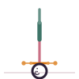

Headstand
Sirsasana
How to
Interlace the fingers on the floor with the crown of the head resting between them, walk the feet in, then lift the legs overhead, balancing on the forearms and head.
Benefits
- Improves circulation and focus
- Builds shoulder and core strength
- Traditionally considered a foundational inversion
Practice
Learn this pose from a teacher first and practice near a wall; avoid it with neck, eye or blood-pressure conditions.

Get the Asanas appFree, no ads, works offline
Google Play
General information, not medical advice. If you have a health condition or pain, talk to a doctor or qualified teacher first.